The scrooge package offers several utilities for diagnosing the output of community detection algorithms.
Consider this canonical example from Varin et al. (2016). We have data describing the number of citations exchanged between 47 statistical journals. Access it using data(citations).
A standard hierarchical clustering of the data yields eight communities.
library(scrooge)
distances <- as.dist(1 - cor(citations + t(citations) - diag(diag(citations))))
clusters <- cutree(hclust(distances), h = 0.6)An ‘expert’ review of these clusters may confirm that they look sensible, but that’s not good enough for us. We want a quantitative diagnosis of their descriptive and predictive power.
Consider, for example, the journal Biometrika, which falls in the third cluster. Is the citation behaviour of this publication described adequately by the community to which it has been assigned?
Every journal has a citation profile, which is a stochastic vector representing the distribution of that journal’s outgoing citations. It is the transition probability vector that describes one step of a random walk around the graph.
For example, suppose we have three journals, \(A\), \(B\) and \(C\). If half of the references in journal \(C\)’s bibliography were to journal \(A\), a quarter to \(B\) and the remainder to itself, then journal \(C\)’s citation profile would be given by the vector \(\pmatrix{0.5 & 0.25 & 0.25}\).
Communities also have citation profiles, calculated from the citations of their constituent journals. How these citations are aggregated is up to you—for now we settle for an unweighted sum, scaled to form a unit vector.
The eight communities in the statistical journals network each have a profile that lies somewhere on the part of the surface of the unit \(46\)-sphere in the positive orthant of \(\mathbb{R}^{47}\).
However our clustering or community detection algorithm works, we have a grouping of journals into clusters. Unless they are really homogeneous, this reduction in dimensionality throws away some detail of each journal’s citation behaviour.
How well do the eight clusters describe Biometrika’s citation profile?
Biometrika_profile <- citations[, 'Bka'] / colSums(citations)['Bka']
np <- nearest_point('Bka', citations, clusters)
near_Biometrika <- community_profile(citations, clusters) %*% np$solution
dissimilarity(Biometrika_profile, near_Biometrika)## [1] 0.1616911Using the index of dissimilarity, we see that 16% of citations are misallocated, when comparing Biometrika’s profile to the nearest possible combination of the eight community profiles.
We can also compute Poisson residuals on the citation counts.
Bka_predicted <- fitted_citations('Bka', citations, clusters)
Bka_residuals <- profile_residuals(Bka_predicted, citations[, 'Bka'])Do the functions from the scrooge package calculate the residuals correctly? Recall the formula for Poisson residuals is \[ r_i = \frac{y_i - \hat{y}_i}{\sqrt{\hat{y}_i}}. \]
The binary operator %==% allows us to check if two vectors are equal (whilst allowing for floating-point error).
Bka_residuals %==% ((citations[, 'Bka'] - Bka_predicted) / sqrt(Bka_predicted))## [1] TRUEHow might we calculate this using a (null) glm?
Remember, a Poisson regression takes the form \[ \log\mathbb{E[y]} = \mathbf{X}\boldsymbol\beta, \] so we will need to take logs whenever referring to predictors that are on the same scale as responses.
model <- glm(citations[, 'Bka'] ~ 0 + offset(log(Bka_predicted)), family = 'poisson')
Bka_residuals %==% resid(model, type = 'pearson')## [1] TRUENow that we have calculated some model residuals, we can plot them in the usual way.
suppressPackageStartupMessages(library(dplyr))
suppressPackageStartupMessages(library(ggplot2))
theme_set(theme_bw())
resids_df <- data_frame(journal = rownames(Bka_residuals),
residual = drop(Bka_residuals),
fitted = drop(Bka_predicted),
q_theo = qqnorm(residual, plot = F)$x)
ggplot(resids_df) +
aes(fitted, residual, label = journal) +
geom_hline(yintercept = 0, colour = 'steelblue', linetype = 2) +
geom_smooth(method = 'loess', colour = 'steelblue', se = FALSE) +
geom_text(aes(colour = journal == 'Bka')) +
labs(x = 'Predicted citation counts', y = 'Residuals',
title = "Profile residuals for 'Biometrika'") +
scale_colour_manual(values = c('black', 'tomato2'), guide = 'none')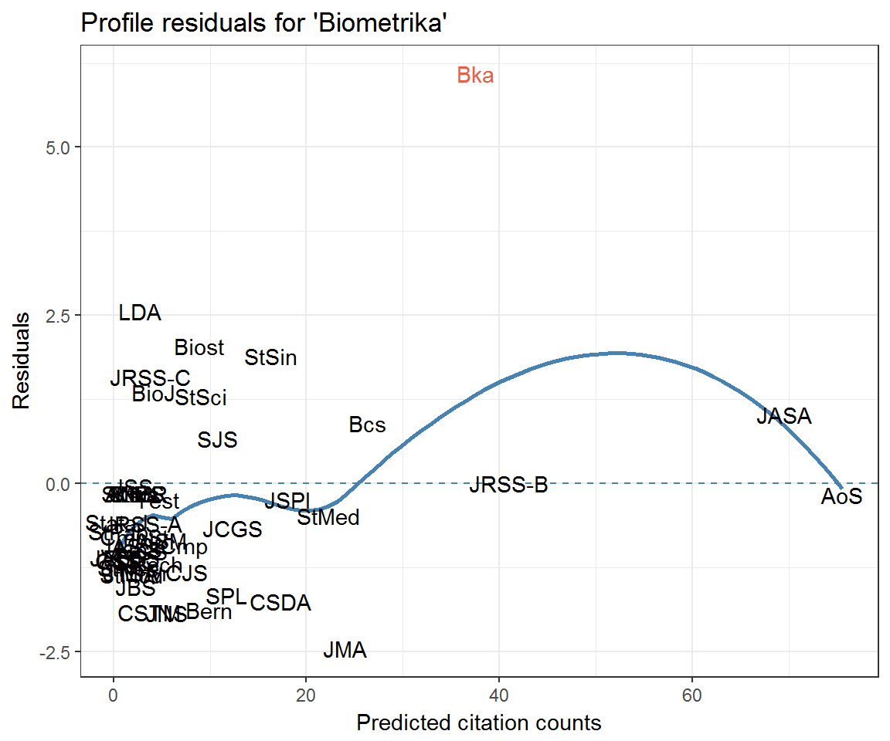
ggplot(resids_df) +
aes(q_theo, residual, label = journal) +
geom_text(aes(colour = journal == 'Bka')) +
ggqqline(Bka_residuals) +
labs(x = 'Normal quantiles',
y = 'Sample quantiles',
title = "Profile residuals for 'Biometrika'") +
scale_colour_manual(values = c('black', 'tomato2'), guide = 'none')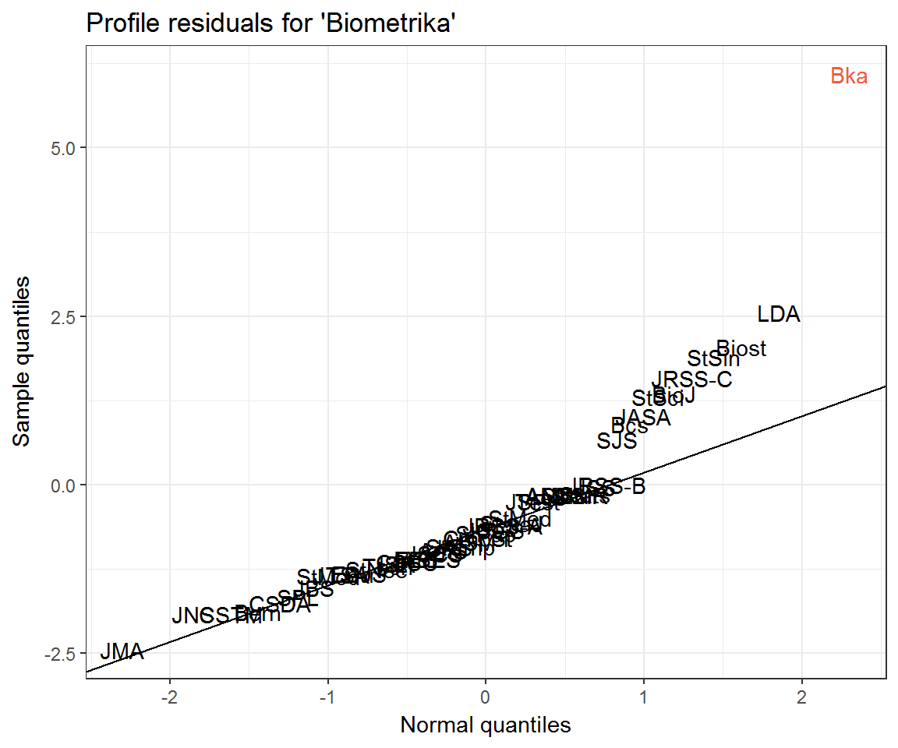
Notice how Biometrika has an extremely high profile residual for citing itself. In other words, the clustering model is under-predicting self-citations. To account for the possibility of ‘excess’ self-citations, we can add a term to the Poisson regression model.
Bka_selfcites <- as.numeric(rownames(citations) == 'Bka')
# Bka_selfcites2 <- diag(diag(citations))[, rownames(citations) == 'Bka'] # actual count
Bka_selfcite_model <- update(model, . ~ . + Bka_selfcites)
broom::tidy(Bka_selfcite_model)## term estimate std.error statistic p.value
## 1 Bka_selfcites 0.6901858 0.11547 5.977187 2.270234e-09What do the residuals look like now?
resids_self_df <- data_frame(journal = rownames(citations),
residual = resid(Bka_selfcite_model, type = 'pearson'),
fitted = fitted(Bka_selfcite_model),
q_theo = qqnorm(residual, plot = F)$x)
ggplot(resids_self_df) +
aes(fitted, residual, label = journal) +
geom_hline(yintercept = 0, colour = 'steelblue', linetype = 2) +
geom_smooth(method = 'loess', colour = 'steelblue', se = FALSE) +
geom_text(aes(colour = journal == 'Bka')) +
labs(x = 'Predicted citation counts', y = 'Residuals',
title = "Profile residuals for 'Biometrika'",
subtitle = 'Controlling for excessive self-citation') +
scale_colour_manual(values = c('black', 'tomato2'), guide = 'none')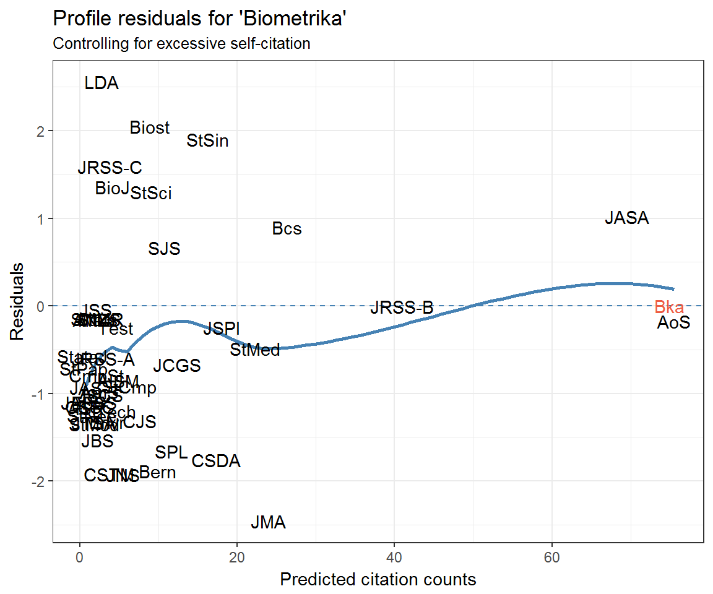
ggplot(resids_self_df) +
aes(q_theo, residual, label = journal) +
geom_text(aes(colour = journal == 'Bka')) +
ggqqline(Bka_residuals) +
labs(x = 'Normal quantiles',
y = 'Sample quantiles',
title = "Profile residuals for 'Biometrika'",
subtitle = 'Controlling for excessive self-citation') +
scale_colour_manual(values = c('black', 'tomato2'), guide = 'none')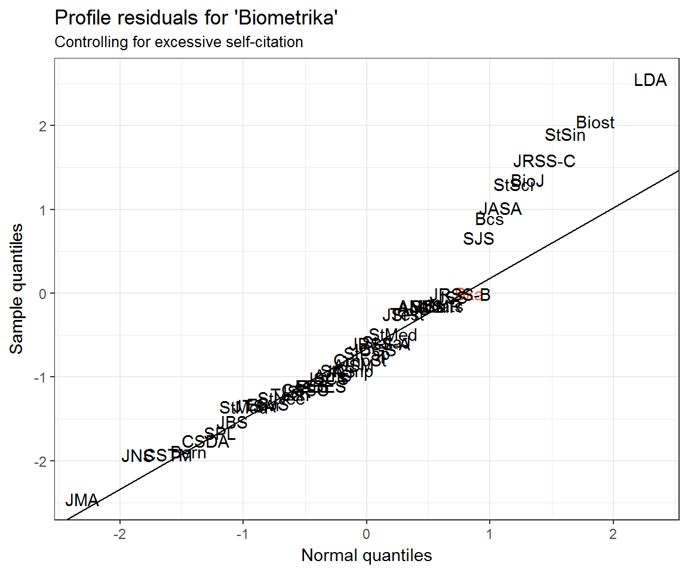
What can explain the departure of the top 9 or so journals from the Q–Q line? Could it simply be the mismatch between the Poisson distribution and its Normal approximation? Recall that a Poisson distribution may be approximated with Normal when \(\lambda\) is large. Some journals’ citation rates are larger than others!
The top 10 residuals for the Biometrika model are
resids_self_df %>%
arrange(desc(residual)) %>%
select(journal, residual) %>%
top_n(10, residual)## # A tibble: 10 x 2
## journal residual
## <chr> <dbl>
## 1 LDA 2.556214e+00
## 2 Biost 2.047477e+00
## 3 StSin 1.899348e+00
## 4 JRSS-C 1.587074e+00
## 5 BioJ 1.354679e+00
## 6 StSci 1.301029e+00
## 7 JASA 1.018278e+00
## 8 Bcs 8.960843e-01
## 9 SJS 6.656752e-01
## 10 Bka -3.413131e-12Which journals are cited by Biometrika—or Biometrika’s community—least?
near_Biometrika %>%
as.matrix %>% as.data.frame %>%
mutate(journal = rownames(near_Biometrika)) %>%
rename(profile = 'V1') %>%
arrange(profile)## profile journal
## 1 0.0006609707 StataJ
## 2 0.0010242470 StPap
## 3 0.0017319563 JAS
## 4 0.0024298233 JABES
## 5 0.0024454028 EES
## 6 0.0026487784 CSSC
## 7 0.0027307814 ISR
## 8 0.0031334273 StNee
## 9 0.0035926543 JTSA
## 10 0.0036672883 StMod
## 11 0.0041363576 JSS
## 12 0.0043315227 CmpSt
## 13 0.0044487900 Stats
## 14 0.0044578422 SMMR
## 15 0.0044742120 Mtka
## 16 0.0044742120 ANZS
## 17 0.0047186405 JBS
## 18 0.0051548675 AmS
## 19 0.0053246106 JSCS
## 20 0.0055345649 LDA
## 21 0.0061233751 JRSS-A
## 22 0.0069548791 Envr
## 23 0.0074239485 CSTM
## 24 0.0077823293 JRSS-C
## 25 0.0084695636 BioJ
## 26 0.0090755337 Test
## 27 0.0091616419 Tech
## 28 0.0098045597 AISM
## 29 0.0111141852 JNS
## 30 0.0126411341 StCmp
## 31 0.0153325459 CJS
## 32 0.0178592129 Biost
## 33 0.0182322801 StSci
## 34 0.0199609214 Bern
## 35 0.0217092989 SJS
## 36 0.0234600984 SPL
## 37 0.0247935141 JCGS
## 38 0.0327824826 StSin
## 39 0.0347530789 CSDA
## 40 0.0362381847 JSPI
## 41 0.0447547440 StMed
## 42 0.0482724557 JMA
## 43 0.0530043565 Bcs
## 44 0.0755245301 Bka
## 45 0.0824047752 JRSS-B
## 46 0.1395789676 JASA
## 47 0.1516664531 AoScitations[, 'Bka'] %>%
as.data.frame %>%
rename(citations = '.') %>%
mutate(journal = rownames(scrooge::citations)) %>%
filter(citations > 0) %>%
arrange(citations) %>%
head(n = 10)## citations journal
## 1 1 AmS
## 2 1 CmpSt
## 3 1 Envr
## 4 1 JNS
## 5 1 JSCS
## 6 2 ANZS
## 7 2 JRSS-A
## 8 2 JSS
## 9 2 Mtka
## 10 2 StatsNothing much there, it seems.
Using the community_residuals() function from the scrooge package, we can calculate the residual sum of squares for each journal based on a given community structure.
community_resids <- data_frame(journal = rownames(citations),
articles = drop(scrooge::articles),
residual = community_residuals(citations, clusters),
outcitations = colSums(citations),
q_norm = qqnorm(residual, plot = F)$x,
q_chi = qchisq(ppoints(nrow(citations))[order(order(residual))], df = nrow(citations)))
ggplot(community_resids) +
aes(outcitations, residual, label = journal) +
geom_smooth(method = 'loess', se = F) +
geom_text() +
labs(x = 'Outgoing citations', y = 'Profile residual sum of squares',
title = 'Community residuals against outgoing citation count')## Warning: Removed 7 rows containing non-finite values (stat_smooth).## Warning: Removed 7 rows containing missing values (geom_text).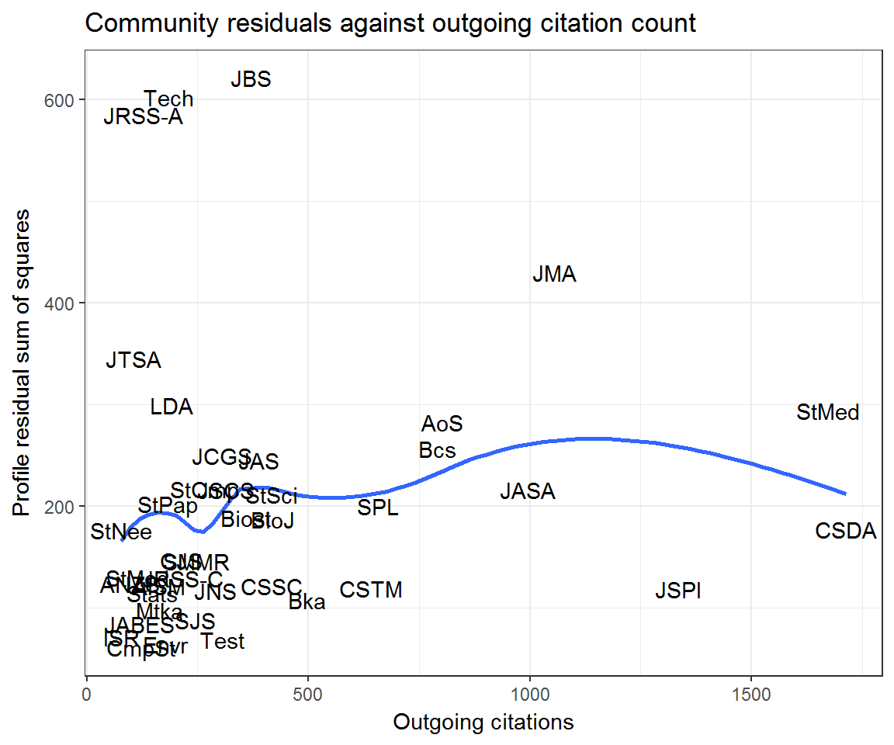
ggplot(community_resids) +
aes(articles, residual, label = journal) +
geom_smooth(method = 'loess', se = F) +
geom_text() +
labs(x = 'Number of articles', y = 'Profile residual sum of squares',
title = 'Community residuals against journal size')## Warning: Removed 7 rows containing non-finite values (stat_smooth).
## Warning: Removed 7 rows containing missing values (geom_text).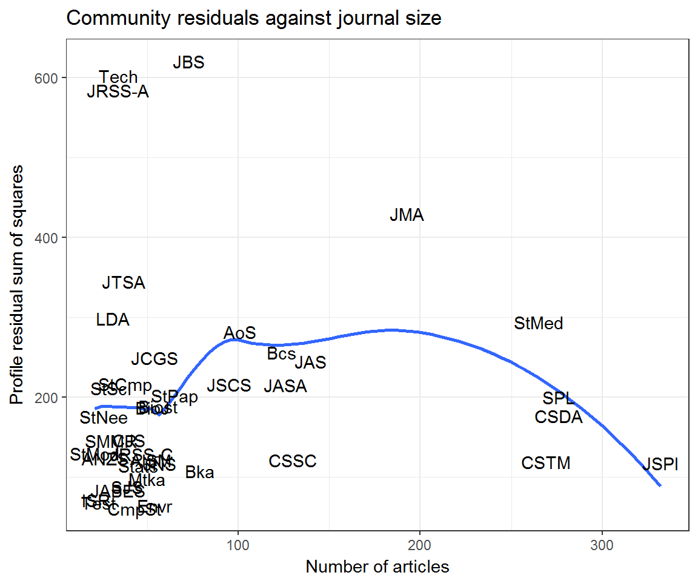
ggplot(community_resids) +
aes(q_norm, residual, label = journal) +
geom_text() +
ggqqline(community_resids$residual) +
labs(x = 'Normal quantiles', y = 'Sample quantiles',
title = 'QQ plot for community residuals (profile residual sum of squares)')## Warning: Removed 7 rows containing missing values (geom_text).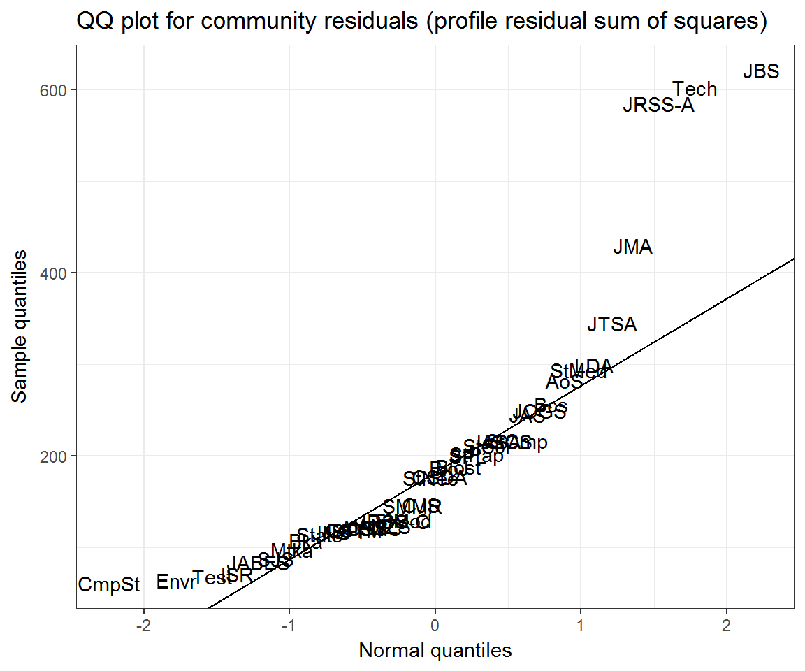
ggplot(community_resids) +
aes(q_chi, residual, label = journal) +
geom_text() +
ggqqline(community_resids$residual, distribution = qchisq, df = nrow(citations)) +
labs(x = 'Chi-squared quantiles', y = 'Sample quantiles',
title = 'QQ plot for community residuals (profile residual sum of squares)')## Warning: Removed 7 rows containing missing values (geom_text).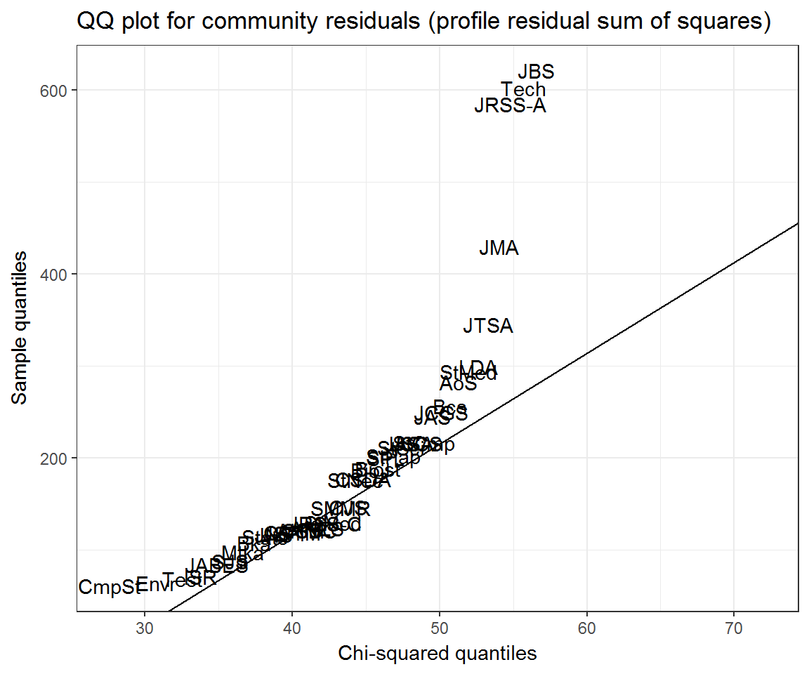
Again, we may want to control for self-citation rates.
Is there a scalable way of doing this without a loop fitting lots of glms? Yes: we can take advantage of the broom package and use it with dplyr.
We want residual sum of squares for each model, where each model is either
Compare the null glm with the calculations currently built into the scrooge package:
hat_citations <- fitted_citations(NULL, citations, clusters)
community_glm <- glm(c(citations) ~ 0 + offset(log(c(hat_citations))), family = poisson)
community_glm_resids <- resid(community_glm, type = 'pearson')
community_scrooge_resids <- profile_residuals(hat_citations, citations)
plot(c(community_scrooge_resids), community_glm_resids, xlab = 'Scrooge package', ylab = 'Null GLM')
abline(a = 0, b = 1)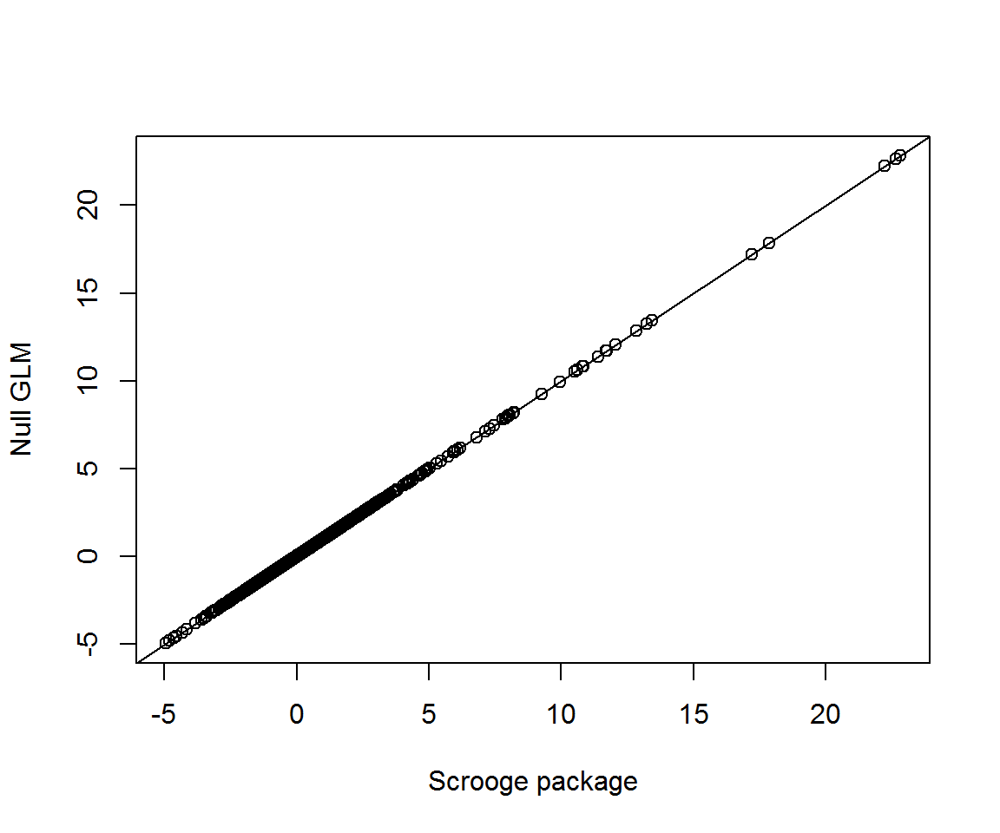
Now we want a glm with self-citation terms added. Since the (log) predicted citations are all ‘offsets’, the design matrix is simply an identity matrix, with one term for each self-citation interaction. When we already known the design matrix, we can use the function glm.fit rather than glm, as follows.
get_rss <- function(j, self_excess = TRUE) {
expected <- log(fitted_citations(j, citations, clusters))
expected[!is.finite(expected)] <- NA
excess_self <- as.numeric(rownames(citations) == j)
mod <- glm(citations[, j] ~ 0 + excess_self, offset = expected, family = poisson, na.action = na.omit)
if (!self_excess) mod <- update(mod, . ~ . - excess_self)
sum(resid(mod, type = 'pearson')^2)
}
community_rss <- vapply(colnames(citations), get_rss, numeric(1))## Warning: glm.fit: fitted rates numerically 0 occurred
## Warning: glm.fit: fitted rates numerically 0 occurred
## Warning: glm.fit: fitted rates numerically 0 occurred
## Warning: glm.fit: fitted rates numerically 0 occurredcommunity_rss2 <- vapply(colnames(citations), get_rss, numeric(1), self_excess = FALSE)## Warning: glm.fit: fitted rates numerically 0 occurred
## Warning: glm.fit: fitted rates numerically 0 occurred
## Warning: glm.fit: fitted rates numerically 0 occurred
## Warning: glm.fit: fitted rates numerically 0 occurredplot(community_rss, community_rss2, type = 'n',
xlab = 'Accounting for self-citations', ylab = 'Community averages only')
text(community_rss, community_rss2, labels = rownames(citations))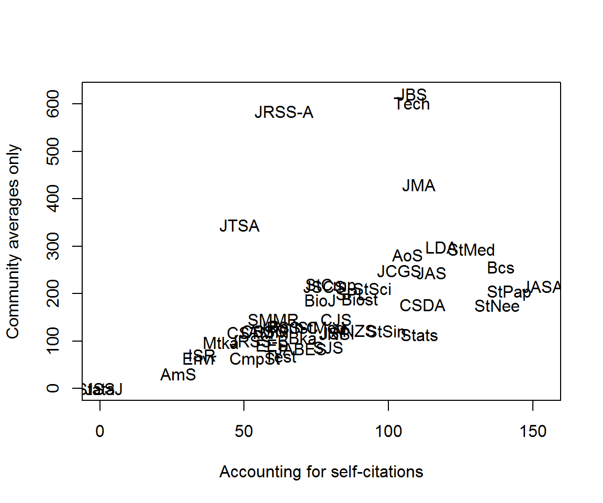
Rather than do everything ad hoc, we will, as much as possible, take advantage of glms and the broom package.
njournals <- ncol(citations)
nearest_profiles <- vapply(colnames(citations), nearest_profile, numeric(njournals),
citations = citations, communities = clusters)
models <- nearest_profiles %>%
as_data_frame %>%
mutate(to = rownames(citations)) %>%
tidyr::gather('from', 'profile', -to) %>%
mutate(citations = citations[cbind(to, from)],
expected = profile * colSums(scrooge::citations)[from],
logexpected = suppressWarnings(log(expected))
, logexpected = replace(logexpected, !is.finite(logexpected), NA)
) %>%
group_by(from) %>%
mutate(self_citation = as.numeric(to == from)) %>%
do(xs_selfcitations = glm(citations ~ 0 + self_citation, family = poisson,
offset = logexpected, na.action = na.omit, data = .),
null_model = glm(citations ~ 0, family = poisson,
offset = logexpected, na.action = na.omit, data = .))## Warning: glm.fit: fitted rates numerically 0 occurred
## Warning: glm.fit: fitted rates numerically 0 occurred
## Warning: glm.fit: fitted rates numerically 0 occurred
## Warning: glm.fit: fitted rates numerically 0 occurredHaving fit each model, we can compute their residuals sums of squares with and without controlling for self-citation.
models_RSS <- models %>%
tidyr::gather('model_type', 'model', xs_selfcitations:null_model) %>%
rowwise() %>%
broom::augment(model, type.residuals = 'pearson') %>%
group_by(from, model_type) %>%
summarise(RSS = sum(.resid^2))## Warning in sqrt(deviance(model)/df.residual(model)): NaNs produced
## Warning in sqrt(deviance(model)/df.residual(model)): NaNs produced
## Warning in sqrt(deviance(model)/df.residual(model)): NaNs produced
## Warning in sqrt(deviance(model)/df.residual(model)): NaNs produced
## Warning in sqrt(deviance(model)/df.residual(model)): NaNs produced
## Warning in sqrt(deviance(model)/df.residual(model)): NaNs producedmodels_RSS %>%
tidyr::spread(model_type, RSS) %>%
ggplot(aes(y = null_model, x = xs_selfcitations, label = from)) +
geom_text() +
#scale_x_log10() + scale_y_log10() +
labs(y = 'RSS from community averages',
x = 'RSS controlling for excessive self-citation',
title = 'Comparison of residual sum of squares from two community citation models',
subtitle = 'On a log-log scale')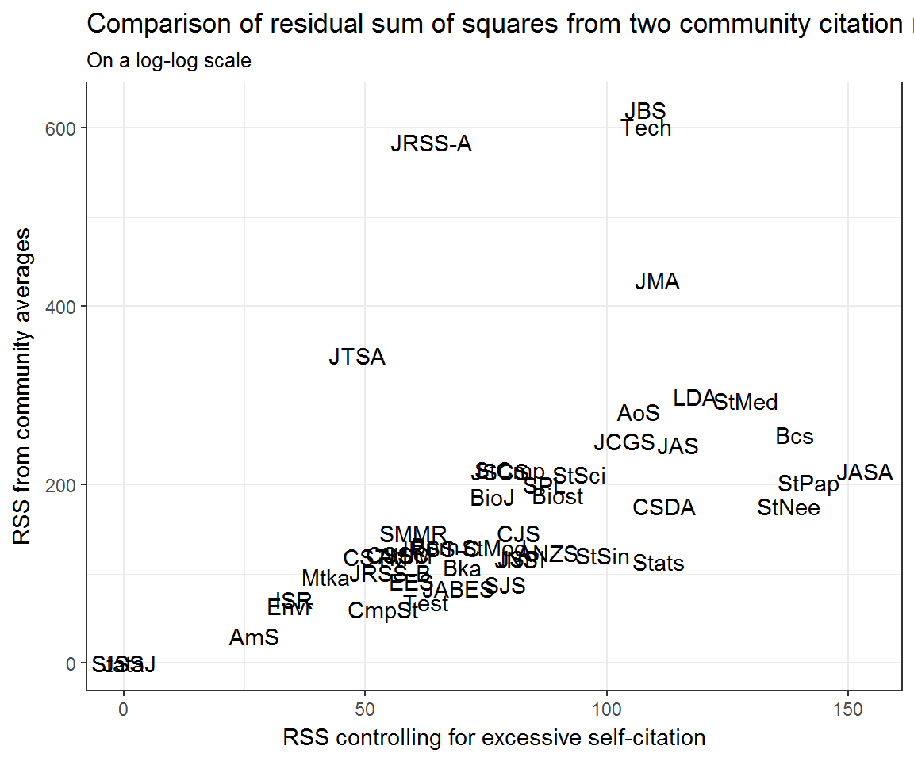
models_RSS %>%
mutate(reference_count = colSums(citations)[from]) %>%
ggplot(aes(reference_count, RSS,
colour = model_type,
group = model_type,
label = from)) +
geom_text() +
labs(x = 'Number of outgoing references',
title = 'Residual sum of squares against reference count') +
theme(legend.position = 'bottom')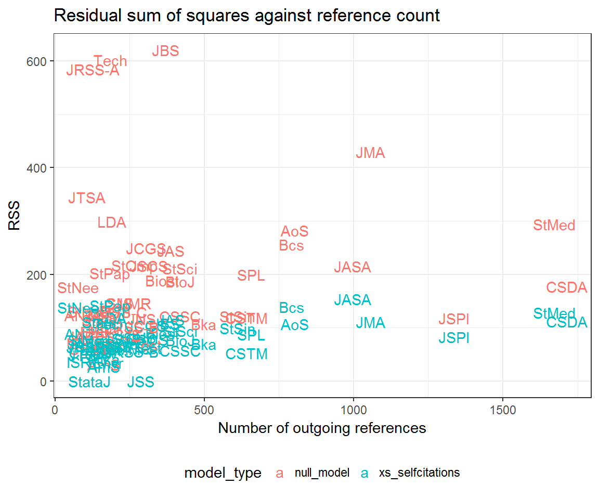
models_RSS %>%
mutate(article_count = scrooge::articles[from, ]) %>%
ggplot(aes(article_count, RSS,
colour = model_type,
group = model_type,
label = from)) +
geom_text() +
labs(x = 'Number of articles',
title = 'Residual sum of squares against article count') +
theme(legend.position = 'bottom')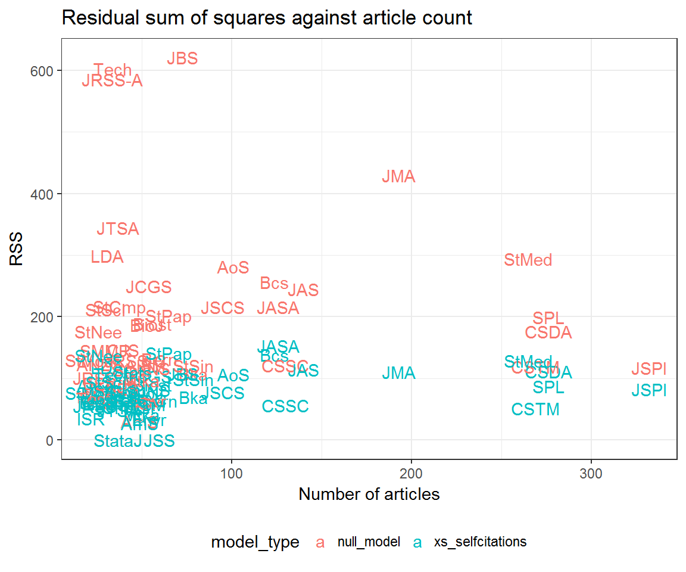
Community residuals seem very high for Journal of the Royal Statistical Society: Series A (JRSS-A) and Technometrics (Tech)—at least when not accounting for excess self-citation. What could be going on here? Let’s look at their profile residuals.
resids_jrssa <- data_frame(journal = rownames(citations),
fitted = drop(fitted_citations('JRSS-A', citations, clusters)),
residual = profile_residuals(fitted, citations[, 'JRSS-A']),
q_theo = qqnorm(residual, plot = F)$x)
ggplot(resids_jrssa) +
aes(fitted, residual, label = journal) +
geom_hline(yintercept = 0, colour = 'steelblue', linetype = 2) +
geom_smooth(method = 'loess', colour = 'steelblue', se = FALSE) +
geom_text(aes(colour = journal == 'JRSS-A')) +
labs(x = 'Predicted citation counts', y = 'Residuals',
title = "Profile residuals for 'JRSS-A'") +
scale_colour_manual(values = c('black', 'tomato2'), guide = 'none')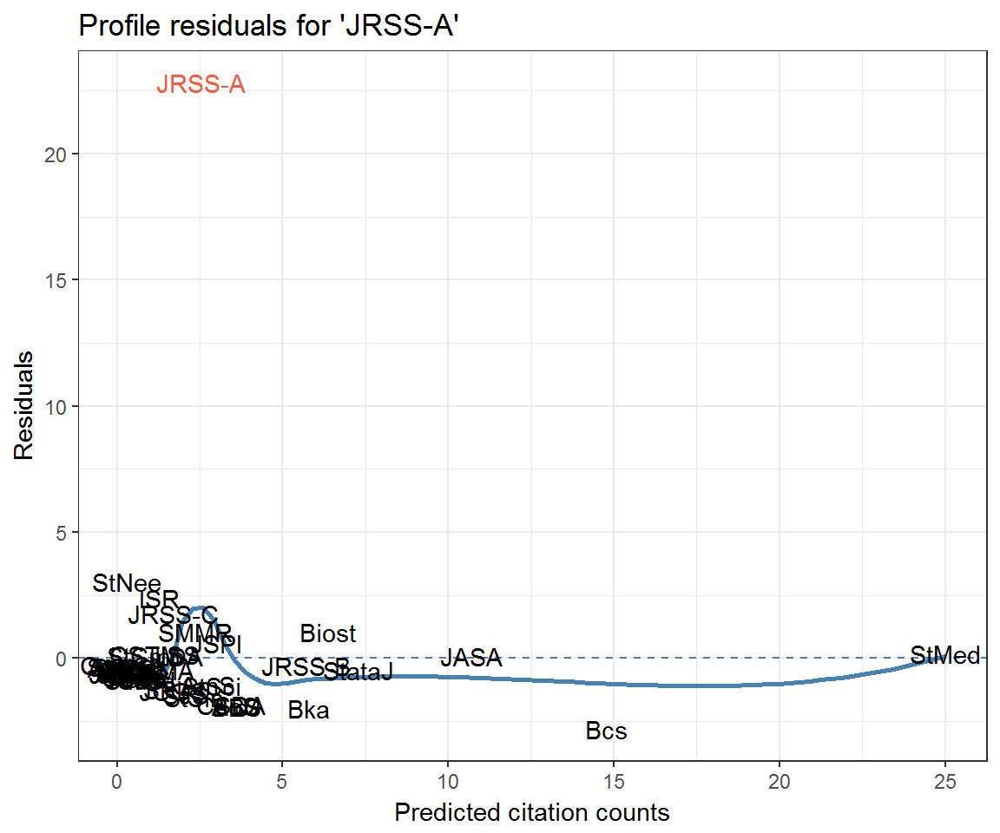
ggplot(resids_jrssa) +
aes(q_theo, residual, label = journal) +
geom_text(aes(colour = journal == 'JRSS-A')) +
ggqqline(resids_jrssa$residual) +
labs(x = 'Normal quantiles',
y = 'Sample quantiles',
title = "Profile residuals for 'JRSS-A'") +
scale_colour_manual(values = c('black', 'tomato2'), guide = 'none')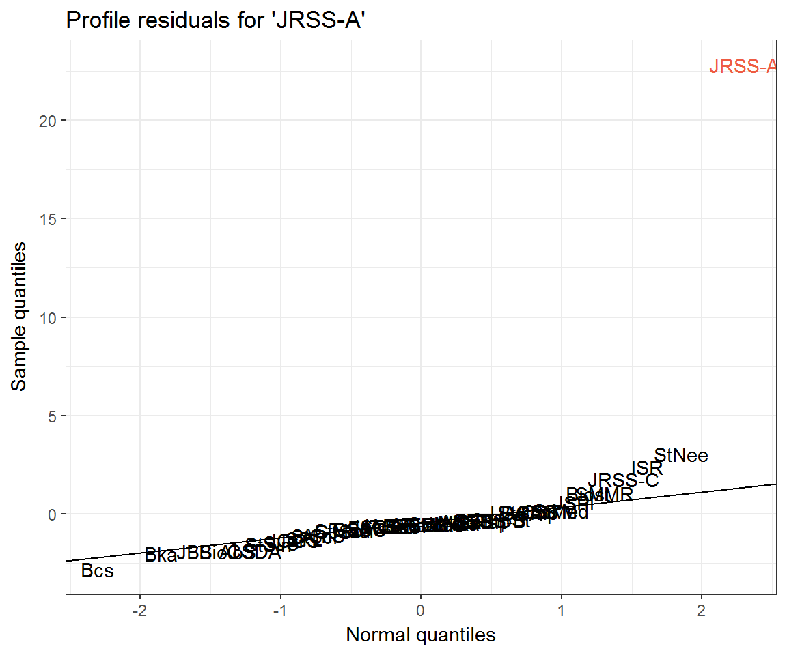
resids_tech <- data_frame(journal = rownames(citations),
fitted = drop(fitted_citations('Tech', citations, clusters)),
residual = profile_residuals(fitted, citations[, 'Tech']),
q_theo = qqnorm(residual, plot = F)$x)
ggplot(resids_tech) +
aes(fitted, residual, label = journal) +
geom_hline(yintercept = 0, colour = 'steelblue', linetype = 2) +
geom_smooth(method = 'loess', colour = 'steelblue', se = FALSE) +
geom_text(aes(colour = journal == 'Tech')) +
labs(x = 'Predicted citation counts', y = 'Residuals',
title = "Profile residuals for 'Technometrics'") +
scale_colour_manual(values = c('black', 'tomato2'), guide = 'none')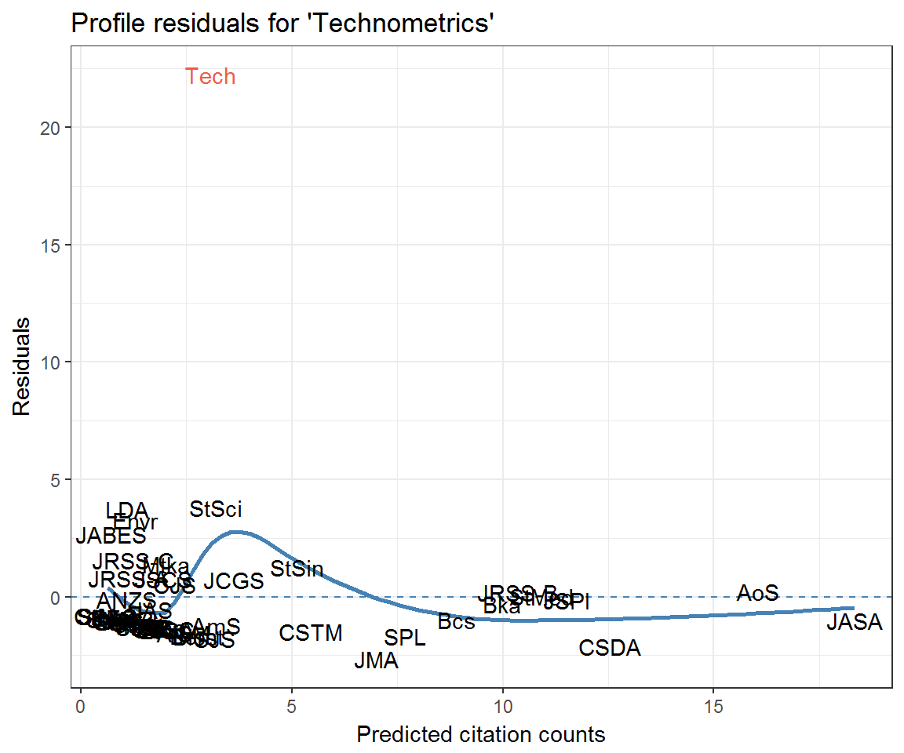
ggplot(resids_tech) +
aes(q_theo, residual, label = journal) +
geom_text(aes(colour = journal == 'Tech')) +
ggqqline(resids_tech$residual) +
labs(x = 'Normal quantiles',
y = 'Sample quantiles',
title = "Profile residuals for 'Technometrics'") +
scale_colour_manual(values = c('black', 'tomato2'), guide = 'none')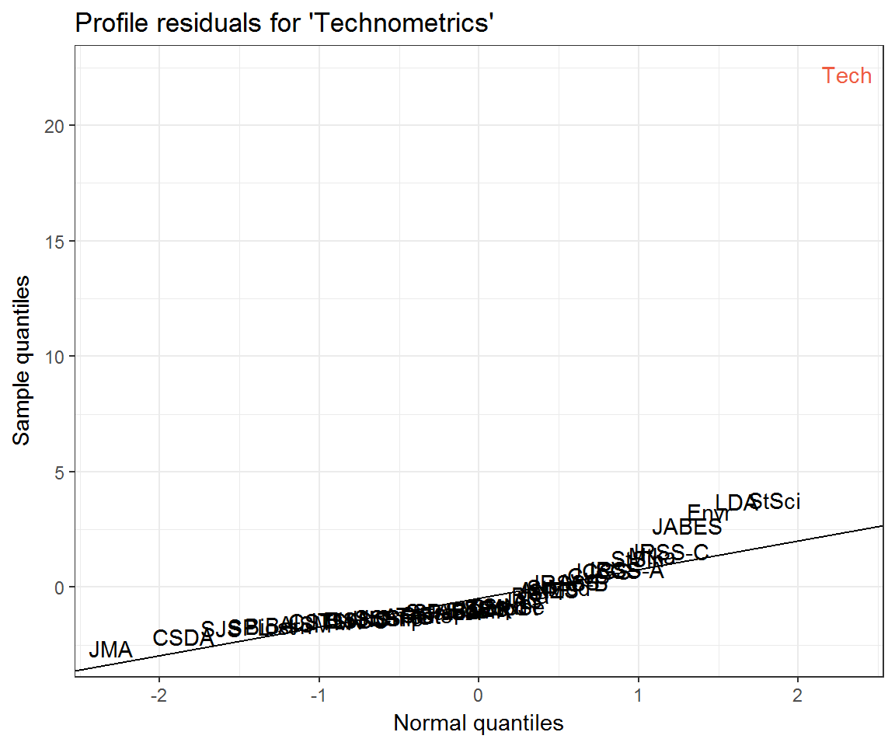
If we look back at the section Community residuals controlling for self-citation then it is clear that the extreme residuals exhibited by JRSS-A and Technometrics are effective nullified by controlling for excess self-citation.
Look at JRSS-A and Technometrics’ profile residuals when excessive self-citation is added to their respective models:
resids_jrssa_test_self <- models %>%
filter(from == 'JRSS-A' | from == 'Tech') %>%
tidyr::gather('model_type', 'model', xs_selfcitations:null_model) %>%
rowwise() %>%
broom::augment(model, type.residuals = 'pearson') %>%
group_by(from, model_type) %>%
mutate(q_theo = qqnorm(.resid, plot=F)$x,
journal = rownames(scrooge::citations))
ggplot(resids_jrssa_test_self) +
aes(exp(.fitted), .resid, label = journal) +
geom_hline(yintercept = 0, colour = 'steelblue', linetype = 2) +
#geom_smooth(method = 'loess', colour = 'steelblue', se = FALSE) +
geom_text(aes(colour = journal == from)) +
scale_colour_manual(values = c('black', 'tomato2'), guide = 'none') +
facet_grid(model_type ~ from) +
labs(x = 'Predicted citation counts', y = 'Residuals',
title = "Profile residuals against fitted values for 'JRSS-A' and 'Technometrics'",
subtitle = "With and without modelling for excess self-citation")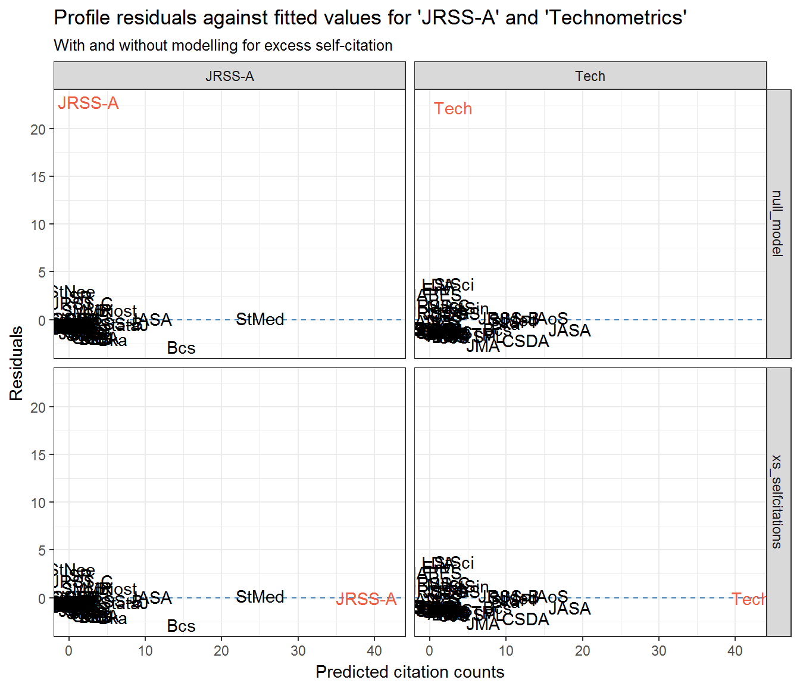
ggplot(resids_jrssa_test_self) +
aes(q_theo, .resid, label = journal) +
geom_text(aes(colour = journal == from)) +
scale_colour_manual(values = c('black', 'tomato2'), guide = 'none') +
facet_grid(model_type ~ from) +
labs(x = 'Normal quantiles',
y = 'Sample quantiles',
title = "QQ plots of profile residuals for 'JRSS-A' and 'Technometrics'",
subtitle = "With and without modelling for excess self-citation")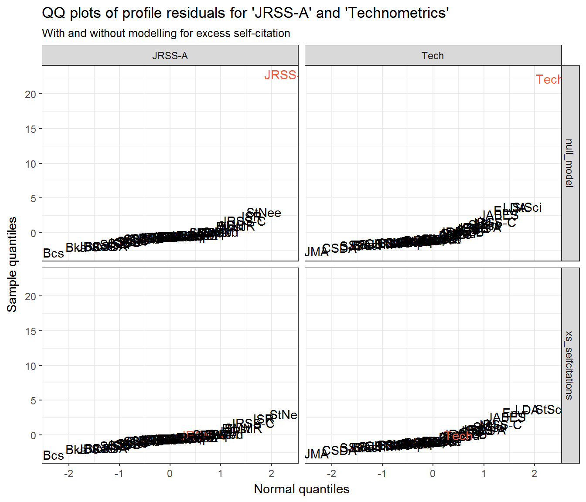